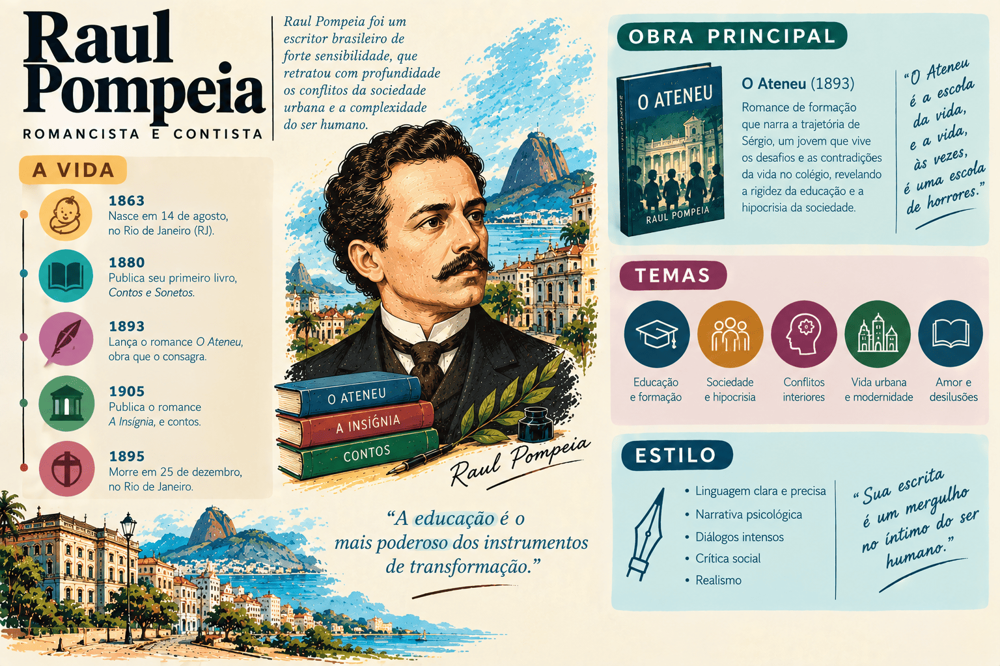

Raul Pompeia: biografia, obras, características literárias e legado
Raul Pompeia foi romancista, cronista, contista, dramaturgo, orador, desenhista e jornalista brasileiro. Autor de O Ateneu (1888), obra-prima singular das letras nacionais, Pompeia é uma das vozes mais fascinantes, complexas e originais do final do século XIX, transitando com maestria inigualável entre o Realismo, o Naturalismo e o Impressionismo literário.
Seu nome completo era Raul d'Ávila Pompeia. Nascido em Angra dos Reis, no Rio de Janeiro, em 1863, viveu com intensidade vulcânica as principais transformações políticas e intelectuais da sua época, destacando-se como panfletário apaixonado nas causas da Abolição da Escravidão e da Proclamação da República.
Com O Ateneu, subtitulado "Crônica de Saudades", construiu um romance memorialista e autobiográfico impiedoso, no qual o célebre internato carioca comandado pelo tirânico diretor Aristarco Argolo de Ramos converte-se em um microcosmo deformado e impiedoso da própria sociedade monárquica do Segundo Reinado.
Autor indispensável nos programas de vestibular do país, Raul Pompeia é presença constante no ENEM, no PAES UEMA e nos exames da Fuvest e Unicamp, desafiando leitores com sua prosa plástica, nervosa, poética e repleta de caricaturas expressionistas.

Raul Pompeia em resumo
- Nome completo: Raul d'Ávila Pompeia.
- Nascimento: 12 de abril de 1863, em Angra dos Reis, Rio de Janeiro.
- Falecimento: 25 de dezembro de 1895, no Rio de Janeiro (suicídio aos 32 anos).
- Movimento literário: Transição estética única — Realismo psicológico, Naturalismo biológico-social e Impressionismo estilístico/sensorial.
- Gêneros cultivados: romance memorialista, prosa poética (poema em prosa), crônica jornalística, novela e ensaio político.
- Obra-prima absoluta: O Ateneu (publicado em folhetim na Gazeta de Notícias em 1888 e em livro no mesmo ano).
- Outras obras de relevo: Uma Quase Doutora (1880, novela satírica) e Canções sem Metro (1900, obra póstuma pioneira do poema em prosa no Brasil).
- Temas centrais: a corrupção da inocência infantil no internato escolar, o autoritarismo pedagógico e institucional, as relações de poder e erotismo entre jovens, a hipocrisia das elites imperiais e a angústia da memória.
- Recursos estilísticos: deformação caricatural e grotesca, prosa poética e sensorial (tato, olfato, visão), sintaxe nervosa e expressionista, e narrador memorialista não confiável.
Quem foi Raul Pompeia?
Raul d'Ávila Pompeia nasceu na fazenda Jacuecanga, no município fluminense de Angra dos Reis, em 12 de abril de 1863. Era filho do magistrado Antônio d'Ávila Pompeia e de Rosa Seraphina Pompeia. Descendente de famílias tradicionais, mudou-se ainda na infância para a cidade do Rio de Janeiro quando o pai foi promovido profissionalmente.
Em 1873, aos dez anos de idade, foi matriculado como aluno interno no afamado Colégio Abílio, instituição de ensino da elite imperial de propriedade do médico e educador Dr. Abílio César Borges (o Barão de Macaúbas). A experiência de clausura, a disciplina severa, as pressões psicológicas e o choque moral da vida no internato marcaram profundamente a sensibilidade do menino e serviram, anos depois, de matéria-prima confessional para a concepção do colégio de O Ateneu e para o perfil caricaturado do diretor Aristarco.
Concluídos os estudos preparatórios no Colégio Pedro II, transferiu-se em 1881 para São Paulo a fim de ingressar na prestigiada Faculdade de Direito do Largo de São Francisco. Na capital paulista, engajou-se de corpo e alma nos movimentos de vanguarda que abalavam a ordem imperial: militou na propaganda republicana, destacou-se pela oratória arrebatada em praças públicas e colocou sua pena a serviço da causa abolicionista ao lado de Luís Gama e Antônio Bento.
Conflitos acadêmicos, transferência para o Recife e maturidade
O temperamento inflamado, combativo e intransigente de Raul Pompeia gerou atritos frequentes com as autoridades imperiais e com o corpo docente conservador da faculdade paulista. Em 1883, em virtude de reprovações com forte viés de perseguição política, transferiu-se juntamente com outros colegas republicanos para a Faculdade de Direito do Recife, tradicional polo de efervescência filosófica sob a influência da Escola do Recife liderada por Tobias Barreto.
Bacharel em Direito em 1885, Pompeia retornou ao Rio de Janeiro. Recusou a carreira jurídica tradicional e optou por viver da imprensa, colaborando com os principais jornais da capital, como a Gazeta de Notícias, O País e o Diário de Notícias, onde escrevia crônicas, artigos de combate político e folhetins ilustrados com suas próprias caricaturas e desenhos.
O triunfo de O Ateneu (1888)
O ano de 1888 foi o momento de glória e afirmação de Raul Pompeia. Enquanto participava ativamente dos comícios e festejos que celebraram a abolição formal da escravidão com a Lei Áurea (13 de maio), publicou entre abril e maio, em episódios diários na Gazeta de Notícias, o romance O Ateneu.
Lançado em livro no segundo semestre do mesmo ano pelas oficinas da Gazeta, a obra impactou a crítica oitocentista pelo arrojo técnico e pela violência cáustica de sua narrativa. Em vez do tom nostálgico e idílico comum aos relatos de infância da época, Pompeia entregava um romance de desilusão implacável, revelando as engrenagens podres da educação moral burguesa.
O drama político na República e o trágico fim
Com a Proclamação da República em 15 de novembro de 1889, Raul Pompeia colocou seu fervor ideológico a serviço do novo regime. Durante a chamada República da Espada, aliou-se incondicionalmente à figura autoritária do Marechal Floriano Peixoto (o "Marechal de Ferro"), atuando como líder civil dos batalhões acadêmicos florianistas durante a terrível Revolta da Armada (1893–1894).
Em recompensa à sua lealdade inabalável, Floriano Peixoto nomeou-o diretor da Biblioteca Nacional em 1894. Contudo, após a eleição e posse do primeiro presidente civil, Prudente de Morais, o ambiente político transformou-se radicalmente. Pompeia entrou em rota de colisão direta com o novo governo ao proferir um violento discurso no enterro de Floriano Peixoto em julho de 1895, o que culminou em sua demissão sumária da Biblioteca Nacional.
Isolado politicamente, atacado impiedosamente pelos antigos aliados na imprensa e envolvido em disputas de honra — inclusive um duelo iminente com o poeta Olavo Bilac e uma polêmica pública com o jornalista Luís Murat —, Raul Pompeia sucumbiu à amargura e ao desespero. Na noite de Natal de 1895, em sua residência no Rio de Janeiro, cometeu suicídio com um tiro no coração, aos 32 anos de idade, deixando um bilhete que sintetizava seu tormento moral: “Ao público: Retrocedo da vida com a serenidade de quem cumpriu o seu dever.”
Contexto histórico: o crepúsculo do Império e as ilusões republicanas
A vida e a produção de Raul Pompeia estão imersas na mais profunda encruzilhada sociopolítica da história do Brasil oitocentista:
- o esgotamento irreversível do Segundo Reinado, marcado pela senilidade de Dom Pedro II, pela crise do sistema escravocrata e pela ascensão do Exército como força política autônoma após a Guerra do Paraguai;
- o clímax das campanhas abolicionista e republicana, nas quais intelectuais e estudantes lideraram comícios populares e comitês de resistência civil nas principais cidades do país;
- o avanço do Cientificismo, do Positivismo e do Evolucionismo social, doutrinas que pretendiam dissecar as doenças morais e as taras hereditárias da sociedade brasileira;
- a euforia e a subsequente frustração da República da Espada (governos de Deodoro da Fonseca e Floriano Peixoto), período conturbado pela inflação galopante do Encilhamento, levantes militares (Revolta da Armada) e sangrentas guerras civis (Revolução Federalista).
Ponto importante: O Ateneu foi publicado exatamente em 1888, ano da Abolição da Escravatura e véspera imediata da queda da Monarquia. O colégio aristocrático retratado por Raul Pompeia não é apenas um educandário: é a alegoria perfeita da decrepitude, da hipocrisia e do desmoronamento moral do próprio Império brasileiro.
Características literárias: o estilo e a técnica de Raul Pompeia
A singularidade de Raul Pompeia na literatura de língua portuguesa reside na maneira como ele funde matrizes estéticas aparentemente opostas em uma síntese estilística absolutamente original:
- Impressionismo literário e prosa sensorial: o narrador não registra a realidade de maneira fria e fotográfica, mas como ela é filtrada pelos sentidos e pelas emoções. As descrições privilegiam jogos de luz e sombra, paletas de cores cambiantes, sinestesias, odores asfixiantes, ruídos e impressões instantâneas da atmosfera.
- Deformação caricatural e grotesca (Expressionismo precursor): o olhar de desenhista e caricaturista de Pompeia projeta-se sobre a escrita. As personagens têm seus traços físicos e psicológicos exagerados até o monstruoso ou o ridículo, antecipando procedimentos estéticos do expressionismo moderno.
- Zoomorfismo e determinismo biológico (veio Naturalista): presença constante de metáforas que rebaixam os seres humanos à condição de feras, répteis, insetos e aves de rapina na feroz luta pela sobrevivência dentro do internato escolar.
- Sondagem psicológica e memória dolorosa (veio Realista): reconstrução analítica do mundo interior do narrador Sérgio, expondo as cicatrizes deixadas pela violência institucional, pelo medo, pela vaidade e pela perda irreparável da pureza.
- Narrador memorialista em primeira pessoa: Sérgio adulto rememora o Sérgio menino. Esse distanciamento temporal cria uma dupla perspectiva — a ingenuidade da criança que vive os fatos e a amargura desiludida do adulto que os julga e condena.
- Riqueza metafórica e sintaxe sinuosa: linguagem erudita, vocabulário refinado, ritmo veloz e sentenças cheias de curvas poéticas que exigem atenção redobrada do leitor.
Principais obras de Raul Pompeia
| Obra | Ano | Gênero | Eixo temático e importância |
|---|---|---|---|
| Uma Quase Doutora | 1880 | Novela / Sátira | Obra de juventude publicada em folhetim aos 17 anos; sátira bem-humorada sobre os preconceitos sociais e a emancipação feminina. |
| O Ateneu | 1888 | Romance memorialista | Obra-prima indiscutível do autor; crônica da corrupção da inocência infantil no internato e alegoria da decadência do Império. |
| As Joias da Coroa | 1882–1883 | Panfleto político e crônicas | Artigos combativos publicados na imprensa atacando a Monarquia, a corrupção ministerial e a família imperial. |
| Canções sem Metro | 1900 | Poemas em prosa (póstumo) | Coletânea de textos líricos em prosa poética publicados esparsamente na imprensa; marco pioneiro do poema em prosa no Brasil. |
Análise aprofundada de O Ateneu (1888)
1. O ponto de partida: a famosa frase inaugural
O Ateneu abre com uma das advertências mais célebres de toda a literatura em língua portuguesa:
“Vais encontrar o mundo, disse-me meu pai, à porta do Ateneu. Coragem para a luta!”
Essa fala inaugural do pai do protagonista Sérgio carrega densidade simbólica monumental. O ingresso no Ateneu aos onze anos não representa apenas o início da formação escolar formal, mas a expulsão violenta do paraíso doméstico e a entrada brutal na arena do "mundo" — um espaço darwinista onde não prevalecem o afeto familiar ou a justiça moral, mas a força bruta, a astúcia e a dissimulação.
2. O colégio como microcosmo da sociedade imperial
O Ateneu é um colégio interno para rapazes mantido no coração do Rio de Janeiro oitocentista. Nele convivem os filhos da aristocracia agrária, da alta burocracia estatal e da burguesia financeira do Império. O internato funciona rigorosamente como um microcosmo social:
- a divisão de castas e o culto à aparência e à hipocrisia;
- a subjugação dos mais fracos e vulneráveis pelos grupos dominantes;
- a vassalagem moral diante do poder central representado pela figura do diretor;
- a anulação da espontaneidade individual em favor da fachada burguesa impecável.
3. Aristarco Argolo de Ramos: o império da impostura
A figura que domina toda a narrativa é o diretor do colégio, Aristarco Argolo de Ramos. Descrito por Raul Pompeia com tintas de caricatura impiedosa, Aristarco personifica o oportunismo, o mercantilismo da pedagogia e a tirania do Segundo Reinado:
- A impostura teatral: Aristarco é um ator permanente de si mesmo. Seus gestos, o timbre grave de voz, os discursos solenes carregados de moralina barata e suas aparições públicas são meticulosamente ensaiados para encantar os pais ricos e seduzir a imprensa da Corte.
- O comerciante de ilusões: por trás da retórica do educador benevolente e devotado, oculta-se um negociante inescrupuloso cuja única preocupação real é a cobrança pontual das mensalidades e a multiplicação dos lucros do colégio.
- Dona Ema e a carícia maternal ambígua: a esposa do diretor, Dona Ema, representa a única presença feminina luminosa no ambiente asfixiante do internato. Para o menino Sérgio, enfermo na enfermaria, Dona Ema encarna uma figura mista de mãe protetora e despertar sensorial do desejo erótico platônico.
4. As etapas da educação moral de Sérgio: protetores e corrupção
Ao ser jogado na selva do internato, o jovem e frágil Sérgio descobre que a sobrevivência exige alianças e renúncia à inocência. Sua trajetória se divide no relacionamento sucessivo com diferentes colegas:
| Colega | Perfil e relação com Sérgio | Significado formativo |
|---|---|---|
| Rebelo | Aluno mais velho, metódico, frio e calculista. Dá conselhos práticos de sobrevivência a Sérgio logo nos primeiros dias. | Representa a lição do utilitarismo e da acomodação cínica às regras do jogo institucional sem contestação. |
| Sanches | Aluno estudioso e aplicado, mas impopular, bajulador dos mestres e solitário. Oferece ajuda acadêmica a Sérgio em troca de intimidade. | Primeira aproximação ambígua e homoerótica; Sérgio rompe a relação ao sentir asco pela cobrança afetiva invasiva de Sanches. |
| Bento Alves | Rapaz robusto, valentão, líder temido e monitor do internato. Toma Sérgio sob sua custódia física protetora. | Relação de vassalagem clássica ("protetor e protegido"); Sérgio troca sua autonomia pela segurança que a força bruta de Bento impõe aos rivais. |
| Franco | O "bode expiatório" permanente do colégio; aluno rebelde, maltrapilho, espancado pelos mestres e desprezado pelos colegas. | Personifica a vítima exemplar da crueldade pedagógica; sua morte trágica no internato expõe a desumanidade fria de Aristarco. |
| Egbert | Jovem de traços anglo-saxões delicados, sensível, leal e culto. Torna-se o amigo mais puro de Sérgio no terço final do livro. | Amizade idealizada e poética, que permite a Sérgio recuperar momentaneamente a nobreza de sentimentos antes da catástrofe final. |
5. O homoerotismo e as relações de poder no internato
Um dos aspectos mais audaciosos e modernos de O Ateneu — raríssimo na literatura do século XIX — é a abordagem direta e sem rodeios do homoerotismo e da sexualidade entre adolescentes confinados.
Pompeia retrata a prática generalizada das "proteções" (o chamado sistema de "damas" e "cavalheiros" entre os alunos mais velhos e os novatos). Longe de representar uma experiência amorosa romântica idealizada, essas relações aparecem marcadas pela hierarquia de poder, pela chantagem emocional, pelo ciúme violento e pela subjugação física dos mais novos, funcionando como escola de cinismo e hipocrisia.
6. O desfecho: o incêndio apocalíptico do Ateneu
A narrativa caminha para o desfecho com um evento de carga simbólica demolidora: o internato é devorado por um misterioso e colossal incêndio criminoso, provocado na calada da noite pelo ressentido aluno Américo.
As chamas consomem a grandiosa estátua de Minerva (símbolo da sabedoria), os móveis de luxo, os dormitórios e o busto esculpido de Aristarco. Diante das cinzas fumegantes da sua empresa e da ruína financeira, o diretor Aristarco contempla o vazio, desprovido de sua máscara de glória.
A catástrofe purificadora: O fogo que consome o Ateneu possui valor purificador e libertador. A instituição opressora precisa ser reduzida a pó para que o pesadelo da infância aprisionada termine, encerrando metaforicamente o ciclo de mentiras da ordem imperial.
Realismo, Naturalismo ou Impressionismo? O enigma estético
A crítica literária brasileira sempre encontrou enorme dificuldade em confinar O Ateneu a uma única gaveta de estilo. O quadro comparativo abaixo evidencia como as três correntes convergem na obra:
| Estética | Presença e manifestação em O Ateneu | Exemplos concretos na obra |
|---|---|---|
| Realismo | Análise psicológica profunda da consciência individual, desmascaramento da hipocrisia burguesa e ceticismo moral em relação às instituições familiares e escolares. | A introspecção amarga de Sérgio adulto ao julgar seus próprios erros; a crítica cáustica aos discursos patrióticos e à retórica vazia da elite carioca. |
| Naturalismo | Determinismo do meio corruptor sobre o indivíduo; zoomorfização das personagens reduzidas a instintos de sobrevivência, medo e sexualidade pulsional. | A transformação de meninos cândidos em "pequenos monstros" cruéis sob a pressão do confinamento; comparação dos alunos a animais ferozes no pátio de recreio. |
| Impressionismo | Registro da realidade a partir da vibração dos sentidos (jogos de luz, aromas, sinestesias); prosa nervosa e poética; deformação lírica da memória. | As descrições suntuosas do entardecer na janela da enfermaria; as sensações febris do toque de Dona Ema; o delírio visual e a fuligem durante o incêndio do colégio. |
Trechos famosos e seus significados
- “Vais encontrar o mundo, disse-me meu pai, à porta do Ateneu. Coragem para a luta!” — abertura célebre do romance, marcando a perda da inocência e a entrada na arena hostil da existência humana sob a lei da sobrevivência do mais forte.
- “Aristarco todo era um anúncio. Os passos eram um anúncio, o gesto era um reclame, a própria gravata era uma ostentação.” — síntese da técnica caricatural de Raul Pompeia, denunciando a falsidade e a mercantilização da educação corporificadas no diretor do colégio.
- “Aqui não há amigos; há cúmplices ou tiranos. Escolhe o teu papel antes que outros o escolham por ti.” — máxima implícita que rege a vida interna do Ateneu, evidenciando como a estrutura do internato corrompe a afetividade e transforma laços humanos em jogos de poder.
- “O Ateneu ardia, iluminando a noite com uma pompa vermelha de tragédia e libertação.” — passagem do clímax em que o incêndio purificador encerra o pesadelo da memória e demole o templo da hipocrisia imperial.
Importância e legado de Raul Pompeia
A obra de Raul Pompeia representa um dos momentos mais altos e revolucionários da prosa literária brasileira:
- Criou com O Ateneu a obra-prima definitiva do romance de internato e de formação às avessas na literatura de língua portuguesa;
- Antecipou procedimentos estéticos das vanguardas modernas do século XX, especialmente a distorção do Expressionismo e a sensorialidade do Impressionismo;
- Abordou com coragem e pioneirismo o tema da sexualidade adolescente e do homoerotismo nas instituições fechadas;
- Produziu em Canções sem Metro uma das mais notáveis e precoces experiências de poema em prosa no Brasil, abrindo caminho para a renovação poética moderna;
- Patrono da Cadeira nº 33 da Academia Brasileira de Letras (escolhido por Teófilo Dias e fundada por Alberto de Oliveira);
- Serviu de influência confessa para grandes ficcionistas do século XX, como Mário de Andrade, Graciliano Ramos e Lúcio Cardoso.
Raul Pompeia no ENEM, no PAES UEMA e nos vestibulares
A presença de Raul Pompeia e de O Ateneu é tradicionalíssima em vestibulares de alta concorrência (como Fuvest, Unicamp e UERJ), no ENEM e no PAES UEMA, exigindo do estudante domínio de análise textual e contextual.
O que mais aparece nas provas?
- A caracterização de Aristarco como caricatura da elite monárquica e do modelo pedagógico repressivo;
- O significado da frase inicial ("Vais encontrar o mundo...") e a destruição do ideal romântico de infância feliz;
- A classificação estilística híbrida da obra: o diálogo vivo entre Realismo, Naturalismo e Impressionismo;
- O sistema de proteções e relações de poder entre os estudantes no confinamento escolar;
- A função simbólica do incêndio final como destruição purificadora da ordem moral corrompida;
- A linguagem altamente metafórica, plástica e expressiva do narrador Sérgio adulto.
Como interpretar um fragmento de O Ateneu?
- Observe a perspectiva do narrador: quem fala é o adulto amargurado que olha para o próprio passado com distanciamento crítico e rancor.
- Preste atenção aos recursos sensoriais: cores, luzes, cheiros e ruídos que traduzem estados de espírito internos.
- Identifique as metáforas zoomórficas: quando alunos e professores são comparados a feras, répteis ou insetos, atente para o sentido de degradação moral.
- Analise os contrastes entre a retórica oficial virtuosa dos discursos solenes e os bastidores sórdidos da rotina do internato.
Erros comuns ao estudar Raul Pompeia
- Reduzir O Ateneu a um romance puramente naturalista: embora haja determinismo ambiental e zoomorfismo, a introspecção psicológica profunda e a estilização poética impressionista colocam a obra muito além do Naturalismo ortodoxo de Émile Zola ou Aluísio Azevedo.
- Achar que o romance expressa saudade doce da infância: o subtítulo "Crônica de Saudades" é profundamente irônico; a saudade em Sérgio é amarga, dolorosa e marcada pelo ressentimento da inocência perdida.
- Ignorar a dimensão autobiográfica da obra: Raul Pompeia estudou no Colégio Abílio e utilizou experiências reais como matéria ficcional, transfigurando o Dr. Abílio César Borges no diretor Aristarco.
- Considerar Aristarco um vilão clássico de folhetim: Aristarco é muito mais complexo do que um vilão melodramático simples; ele é um representante perfeito da burguesia imperial hipócrita e encenadora de aparências.
- Esquecer a atuação política de Raul Pompeia: separar o autor de suas paixões republicanas e abolicionistas empobrece a compreensão da fúria crítica presente em seus romances e artigos.
Quiz sobre Raul Pompeia
Questões de interpretação — nível avançado
Questão 1 — No romance O Ateneu (1888), a célebre advertência paterna que abre a obra — “Vais encontrar o mundo, disse-me meu pai, à porta do Ateneu. Coragem para a luta!” — expressa qual concepção fundamental sobre o internato?
Questão 2 — Qual traço singular da linguagem e da técnica descritiva de Raul Pompeia em O Ateneu justifica a inclusão do autor na vertente do Impressionismo literário?
Questão 3 — A caracterização do diretor Aristarco Argolo de Ramos em O Ateneu constrói uma caricatura que atinge qual elemento da sociedade brasileira do final do século XIX?
Questão 4 — Em relação à representação das relações afetivas e homoeróticas entre os alunos no internato de O Ateneu, como a narrativa estrutura essas experiências?
Questão 5 — Qual é o significado simbólico do incêndio destruidor que encerra o romance O Ateneu?
Questão 6 — Além de O Ateneu, qual obra póstuma de Raul Pompeia, publicada em 1900, consolidou-se como marco pioneiro na literatura brasileira por introduzir o gênero do poema em prosa?
Resumo final sobre Raul Pompeia
- Nasceu em Angra dos Reis (RJ) em 1863, estudou no Colégio Abílio e cursou Direito em São Paulo e no Recife.
- Fervoroso militante republicano e abolicionista no final do Segundo Reinado; defensor intransigente do Marechal Floriano Peixoto na República.
- Faleceu tragicamente por suicídio no Rio de Janeiro na noite de Natal de 1895, aos 32 anos.
- Publicou O Ateneu em 1888, considerado um dos romances mais geniais, audaciosos e estilisticamente ricos do século XIX.
- Transita entre o Realismo psicológico, o Naturalismo biológico-social e o Impressionismo sensorial.
- Criou na figura do diretor Aristarco Argolo de Ramos a mais perfeita caricatura da impostura e da hipocrisia das elites imperiais.
- Retratou o internato escolar como um microcosmo impiedoso da sociedade, marcado por jogos de poder, homoerotismo e destruição da inocência infantil.
- Concluiu a obra com o apocalíptico e libertador incêndio do colégio, metáfora da derrocada moral da ordem monárquica.
- Pioneiro do poema em prosa no Brasil com a obra póstuma Canções sem Metro (1900).
- Patrono da Cadeira nº 33 da Academia Brasileira de Letras.
Perguntas frequentes sobre Raul Pompeia
Quem foi Raul Pompeia?
Foi um importante romancista, cronista, orador, desenhista e jornalista brasileiro do século XIX, célebre pela militância abolicionista e republicana, pela autoria do romance O Ateneu (1888) e por ocupar o patronato da Cadeira nº 33 da Academia Brasileira de Letras.
Qual é a principal obra de Raul Pompeia?
Sua obra-prima incontestável é o romance O Ateneu, publicado em 1888, subtitulado "Crônica de Saudades", considerado um dos maiores marcos da prosa psicológica e estilística da literatura brasileira.
O Ateneu é uma obra realista, naturalista ou impressionista?
A obra apresenta natureza estética híbrida e singular: é realista pela penetração psicológica e denúncia moral; é naturalista pelo determinismo do meio confinador e pela zoomorfização dos corpos; e é impressionista pela linguagem sensorial, jogos de luz e deformação poética da memória.
O que representa o colégio "Ateneu" na obra?
O colégio funciona como um microcosmo da sociedade imperial brasileira do Segundo Reinado, revelando a tirania das autoridades, a hipocrisia das elites aristocráticas, o mercantilismo da educação e a corrupção precoce da pureza das crianças.
Quem é Aristarco Argolo de Ramos e o que ele simboliza?
É o imponente e teatral diretor do colégio Ateneu. Simboliza a impostura pública, a vaidade burguesa, a falsa retórica moralizante e o modelo pedagógico autoritário da sociedade oitocentista.
Como as relações afetivas e de poder entre os alunos são retratadas em "O Ateneu"?
São retratadas de modo cru e pioneiro por meio do sistema de "proteções" (homoerotismo utilitário), no qual os alunos mais velhos e fortes dominam os mais frágeis e novatos em trocas marcadas por ciúme, vassalagem e subjugação física.
O que simboliza o incêndio final do colégio no desfecho de "O Ateneu"?
O incêndio provocado pelo aluno Américo possui valor purificador e simbólico: destrói o templo da opressão pedagógica e mercantil, anunciando metaforicamente o desmoronamento iminente de toda a estrutura moral e política do Império brasileiro.
Qual foi a importância de Raul Pompeia para a literatura brasileira?
Além da força inovadora de O Ateneu, que antecipou procedimentos do expressionismo e impressionismo modernos, Pompeia introduziu o poema em prosa no Brasil com Canções sem Metro e renovou o romance de formação em nossa língua.
Conteúdos relacionados
- Machado de Assis: biografia, obras, características literárias e legado
- Aluísio Azevedo: biografia, obras, características literárias e legado
- Realismo no Brasil: contexto, características, autores e obras
- Naturalismo no Brasil: características, autores e obras
- Bernardo Guimarães: biografia, obras, características literárias e legado
- Franklin Távora: biografia, obras, a Literatura do Norte e o cangaço
- Conteúdos de Literatura Brasileira
- Mais conteúdos de Literatura Brasileira
Conclusão
A trajetória literária de Raul Pompeia representa um meteoro incandescente na história das letras brasileiras do século XIX. Ao recusar as fórmulas fáceis do melodrama romântico e a simples frieza dos esquemas deterministas, o escritor fluminense construiu com O Ateneu um monumento de agudeza psicológica, coragem temática e virtuosismo estilístico que permanece inigualável.
Sua prosa nervosa, plástica e arrebatada não apenas descortinou os bastidores traumáticos da educação moral da juventude aristocrática, mas também projetou luz implacável sobre a hipocrisia congênita das instituições sociais do Brasil imperial. Por essa densidade estética insubmissa e pela autenticidade dolorosa de sua confissão, a voz de Raul Pompeia ecoa através do tempo como uma das realizações mais fascinantes da literatura universal.
Referências
- ACADEMIA BRASILEIRA DE LETRAS. Raul Pompeia: biografia e patrono da Cadeira 33. Disponível em: Acessar.
- BIBLIOTECA NACIONAL DIGITAL. Raul Pompeia: acervo de manuscritos e obras digitalizadas. Disponível em: Acessar.
- ENCICLOPÉDIA ITAÚ CULTURAL. Raul Pompeia. Disponível em: Acessar.
- POMPEIA, Raul. O Ateneu. Edição crítica com introdução e notas de Fernando Góes. São Paulo: Penguin-Companhia, 2013.
- POMPEIA, Raul. Canções sem Metro. Rio de Janeiro: Fundação Biblioteca Nacional, 2004.
- BOSI, Alfredo. História concisa da literatura brasileira. São Paulo: Cultrix, 2017.
- CANDIDO, Antonio. Vários escritos ("No raiar de claridades"). Rio de Janeiro: Ouro sobre Azul, 2004.
- SOUZA, Roberto Acízelo de. O Ateneu de Raul Pompeia: estudo crítico. Rio de Janeiro: Francisco Alves, 1988.
- MIGUEL-PEREIRA, Lúcia. Prosa de ficção (de 1870 a 1920). Belo Horizonte: Itatiaia / Edusp, 1988.
Explore Outros Conteúdos
Continue seus estudos acessando outras seções do site Mestre Kira: